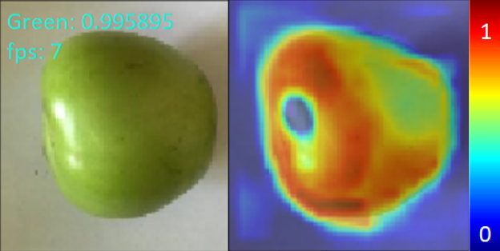

Triển khai¶
Note
Hệ thống mình deploy lên là Raspberry Pi 3B+ và đạt được FPS vào khoảng 7FPS khi chạy thời gian thực
1. Cài đặt:¶
Sử dụng lại repo Github đã clone lúc chuẩn bị dữ liệu
Repo: https://github.com/phattruongai/Tomato-classification-system.git
Chuyển đến thư mục Classification:
cd Classification
Kết nối USB webcam tới máy tính hoặc Raspberry Pi
2. Chạy code thời gian thực:¶
Chạy:
python3 test_script/test/test/test.py --workingdir . --modelpath <your_model_path>
Kết quả sẽ được hiển thị lên màn hình như hình dưới:

3. Giải thích code:¶
Load model và lấy session hiện tại:
#change dir and load model
os.chdir(args.workingdir)
model = load_model(args.modelpath)
#get session of model to use in gradCAM computing
sess = tf.keras.backend.get_session()
Gọi hàm
test_vidvới param = “camera” để chạy real time với các frame lấy được từ webcam
Hàm
test_vidnằm trong fileutils.py
#run real time process
test_vid("camera",model,sess)
Hàm
test_vidbao gồm các công việc:Khởi tạo static graph cho việc tính toán grad-CAM:
arg = grad_cam_generate(model,"add_2",6)
Đọc frame từ webcam, resize và normalize:
# Read frame from camera _,frame = cap.read() # Preprocessing img = cv2.resize(frame[40:410,140:500,:],(100,100))/255.
Chạy model:
# Let model do the prediction predictions = model.predict(np.expand_dims(img,0)) prob = np.max(predictions) predicted_class = np.argmax(predictions) print(" ",predicted_class)
Dùng output của model để tính grad-CAM, tạo heatmap:
# Generate the grad-CAM heatmap to visualize cam,heatmap,full_img = grad_cam(model, predicted_class,sess, img, arg) font = cv2.FONT_HERSHEY_SIMPLEX img = np.concatenate((full_img,cam), axis = 1) # create 2 views, 1 for original image, 1 for images with grad-CAM heatmap img = cv2.resize(img,disp_size) # resize to the fixed size to visualize end = time.time() # mark the finishing time fps = 1/(end - start) # compute FPS